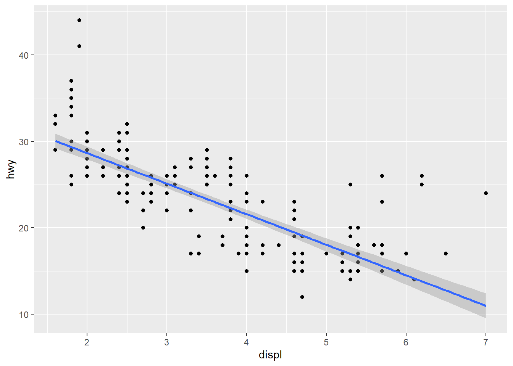
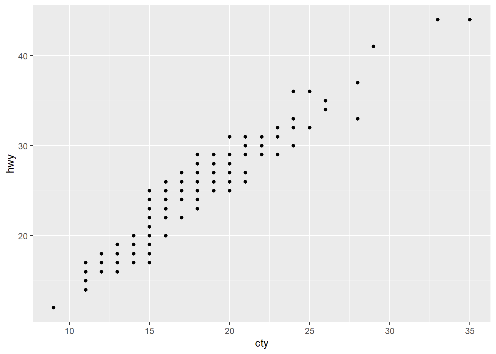
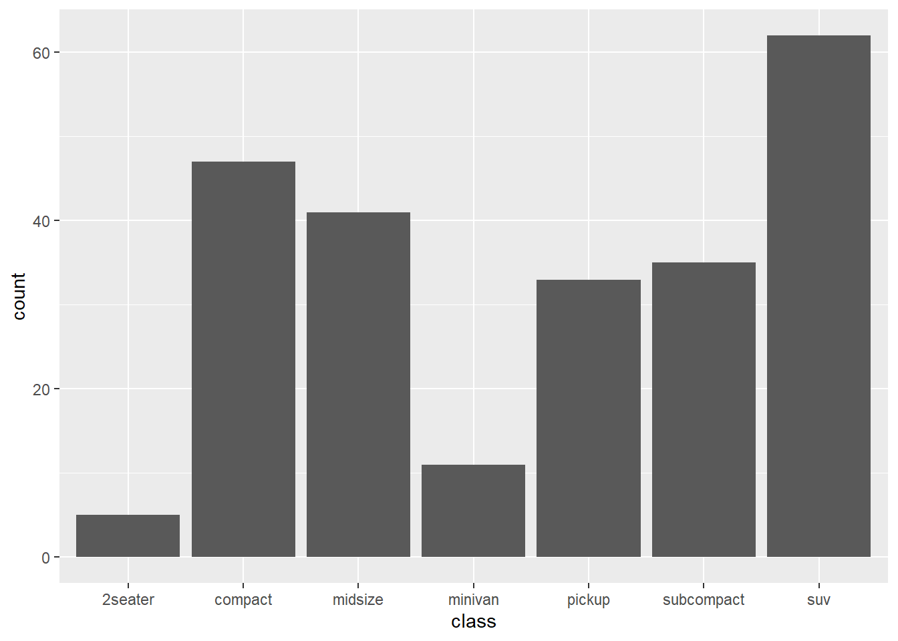

1 / 200 * 30[1] 0.15(59 + 323 + 2) / 3[1] 128sin(pi / 3)[1] 0.8660254Using R to do basic math calculations:
1 / 200 * 30[1] 0.15(59 + 323 + 2) / 3[1] 128sin(pi / 3)[1] 0.8660254Create new objects with the assignment operator <- (shortcut: Alt + -):
x <- 3 * 5Note that the value of x is not printed, it’s just stored. To view the value, type x in the console.
x[1] 15You can combine multiple elements into a vector with c():
primes <- c(2, 3, 5, 7, 11, 13)Basic arithmetic on vectors is applied to every element of the vector:
primes * 2[1] 4 6 10 14 22 26primes - 1[1] 1 2 4 6 10 12All R statements where you create objects (assignment statements) have the same form:
object_name <- 58Object names must start with a letter and can only contain letters, numbers, _ and ..
i_use_snake_case
otherPeopleUseCamelCase
some.people.use.periods
And_aFew.People_RENOUNCEconventionsnake_case is better: lowercase only, with _ between words.
To inspect an object, type its name:
x[1] 15this_is_a_long_ass_name <- 2.6To inspect a long name, type the first few letters (like “this”) and press Tab to autocomplete.
Another assignment:
r_rocks <- 3 * 3R has built-in functions that are called like this:
function_name(argument1 = value1, argument2 = value2, ...)seq(from = 1, to = 10) [1] 1 2 3 4 5 6 7 8 9 10The names of the first several arguments are often omitted, so we can rewrite this as:
seq(1, 10) [1] 1 2 3 4 5 6 7 8 9 10x <- "hello world"
x[1] "hello world"1. Why does this code not work?
my_variable <- 10
my_varıableError:
! object 'my_varıable' not foundThe second line has a typo: the “i” in variable is a different character (a dotless ı), so R looks for an object that doesn’t exist.
2. Tweak each of the following R commands so that they run correctly.
The broken versions:
libary(todyverse)
ggplot(dTA = mpg) +
geom_point(maping = aes(x = displ y = hwy)) +
geom_smooth(method = "lm)The tweaked versions:
library(tidyverse)
ggplot(data = mpg, mapping = aes(x = displ, y = hwy)) +
geom_point() +
geom_smooth(method = "lm")
But I can write it more concisely (at my level, lol):
ggplot(mpg, aes(displ, hwy)) +
geom_point() +
geom_smooth(method = "lm")
3. Press Option + Shift + K / Alt + Shift + K. What happens? How can you get to the same place using the menus?
The keyboard shortcut quick reference opens. Using the menus: Help → Keyboard Shortcuts Help.
4. Revisit an exercise from Section 1.6. Run the following lines of code. Which of the two plots is saved as mpg-plot.png? Why?
my_bar_plot <- ggplot(mpg, aes(x = class)) +
geom_bar()
my_scatter_plot <- ggplot(mpg, aes(x = cty, y = hwy)) +
geom_point()ggsave(filename = "mpg-plot.png", plot = my_bar_plot)The bar plot is saved, because plot = my_bar_plot tells ggsave() exactly which plot to use.
Note that when a plot is assigned to an object, it is stored but not shown. Call the object by name to see it:
my_scatter_plot
my_bar_plot
2.2 Comments
Use comments to explain the why of your code, not the how or the what.